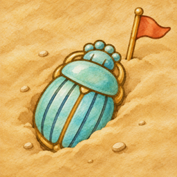

Relic Sweeper
Saper bez zgadywania i muzeum do skompletowania.
Odkopuj pola jak w klasycznym saperze, ale bez zgadywania: każdą planszę da się rozwiązać logiką. Wydobyte fragmenty składają się w eksponaty, a eksponaty zapełniają gabloty Twojego muzeum. Wyprawy do Egiptu i Pompejów, codzienny wykop i tryb swobodny.
iPhone, iOS 26 lub nowszy.